Last time we were just looking at the relative income distribution. This time we’ll try to fit some curves to it.
The goal is to find a parametric model \(P_{\phi}\) that fits the data well for some \(\phi\) (we’ll most probably work with \(\mathbb{R}\)-valued vector \(\phi\)’s).
Now though I have made a clean CSV file with the simplified data, let me just grab that 😉
This is a small detail worth nothing 🤓. The interface to fit is the same for all: you get your data \(\vec{x} \coloneqq [x_1, \ldots, x_n]\) into an array and you call fit_mle(Distribution, data).
Show the code
validPts =filter(x -> x .>0, df.rel_income)fittedGamma =fit_mle(Gamma, validPts)ymax =maximum(pdf.(fittedGamma,validPts))plot( fittedGamma, label=L"Gamma $\Gamma$ fit", xlabel=L"Relative income $i_p$",ylabel=L"Probability density $f(i_p)$", size=(800, 600), color=:pink, fill=(0, 0.2, :pink), background_color="#7711d708", legendfontsize=18, guidefontsize=18, ylims=(0, ymax*1.1), title="Gamma fit to the data, \$k = $(round(fittedGamma.α, sigdigits=3)), \\theta = $(round(fittedGamma.θ, sigdigits=3))\$",)

Show the code
usingMarkdownNLL =-loglikelihood(fittedGamma, validPts)ls =""" Alright that's pretty good, we've got our \$\\Gamma\$ fit to the data, with \$k = $(round(fittedGamma.α, sigdigits=3)),\\theta = $(round(fittedGamma.θ, sigdigits=3))\$ How good is this fit though ? Let's check the log-likelihood of the data under this model. \$\\text{log}P_{\\phi}(\\vec{x}) = $(round(NLL, sigdigits=3))\$ """Markdown.parse(ls)
Alright that’s pretty good, we’ve got our \(\Gamma\) fit to the data, with \(k = 1.83, \theta = 14.5\)
How good is this fit though ? Let’s check the log-likelihood of the data under this model.
\[
\text{log}P_{\phi}(\vec{x}) = 2070.0
\]
It’s been a while since I actually looked at NLL values but this seems quite high. Let’s check the QQ plot to see how it looks.
Uh oh, that’s not good. The QQ plot is not looking good at all.
Out of curiosity lets see the result of the KS test.
Show the code
usingHypothesisTestsks =ExactOneSampleKSTest(validPts, fittedGamma)ls =""" The likelihood that the data is drawn from the fitted Gamma distribution is given by the \$p\$-value \$D_n(d)\$ where \$d = \\lVert F_n - F \\rVert_{\\infty}\$, here: \$p = $(round(pvalue(ks, tail=:both), sigdigits=3))\$ """Markdown.parse(ls)
The likelihood that the data is drawn from the fitted Gamma distribution is
given by the \(p\)-value \(D_n(d)\) where \(d = \lVert F_n - F \rVert_{\infty}\),
here: \(p = 8.24e-6\)
Well that’s a way to put it. The p-value is on the order of \(10^{-6}\), OK. In comparison most scientific papers use a threshold for rejection of the null that’s \(\approx 10^{-2}\). We’re roughly \(10000\) more confident here ! Let’s try the other two.
The LogNormal distribution
The LogNormal is just a gaussian squished through a logarithmic post-processor, it’s a bit more intuitive but there’s no reason it should be better than the Gamma (a priori).
Show the code
fittedLogNormal =fit_mle(LogNormal, validPts)ymax =maximum(pdf.(fittedLogNormal, validPts))plot( fittedLogNormal, label=L"LogNormal $\mathcal{LN}$ fit", xlabel=L"Relative income $i_p$",ylabel=L"Probability density $f(i_p)$", size=(800, 600), color=:pink, fill=(0, 0.2, :pink), background_color="#7711d708", legendfontsize=18, ylims=(0, ymax*1.1), guidefontsize=18, title="LogNormal fit to the data, \$\\mu = $(round(fittedLogNormal.μ, sigdigits=3)), \\sigma = $(round(fittedLogNormal.σ, sigdigits=3))\$",)

Alright, let’s not have our hopes up too high. Let’s check the QQ plot.
This is hilariously bad !! No use checking the KS test.
Last but not least, the Weibull distribution.
The Weibull distribution
Weibull is a more general version of the exponential distribution, a \(W\) weibull variable is generally \(W \propto (X/\lambda)^k\) where \(X\) is a \(\lambda\)-scale exponential variable.
Show the code
fittedWeibull =fit_mle(Weibull, validPts)ymax =maximum(pdf.(fittedWeibull, validPts ))plot( fittedWeibull, label=L"Weibull $\mathcal{W}$ fit", xlabel=L"Relative income $i_p$",ylabel=L"Probability density $f(i_p)$", size=(800, 600), color=:pink, fill=(0, 0.2, :pink), background_color="#7711d708", legendfontsize=18, guidefontsize=18, ylims=(0, ymax*1.1), title="Weibull fit to the data, \$\\alpha = $(round(fittedWeibull.α, sigdigits=3)), \\beta = $(round(fittedWeibull.θ, sigdigits=3))\$",)
Ooohh 👀 hey there, that’s not bad at all. Let’s check the NLL first.
Show the code
NLL =-loglikelihood(fittedWeibull, validPts)ls =""" The (negative) log-likelihood of the data under this model is.. \$\\text{log}P_{\\phi}(\\vec{x}) = $(round(NLL, sigdigits=3))\$ """Markdown.parse(ls)
The (negative) log-likelihood of the data under this model is..
\[
\text{log}P_{\phi}(\vec{x}) = 2050.0
\]
Hmm, not sure what to make of this. Let’s check the KS test.
Show the code
ks =ExactOneSampleKSTest(validPts, fittedWeibull)ls =""" The likelihood that the data is drawn from the fitted Weibull distribution is given by the \$p\$-value \$D_n(d)\$, which is equal to \$p = $(round(pvalue(ks, tail=:both), sigdigits=3))\$ """Markdown.parse(ls)
The likelihood that the data is drawn from the fitted Weibull distribution is
given by the \(p\)-value \(D_n(d)\), which is equal to
\[
p = 4.99e-5
\]
Meh, all of them get zero but the KS test is known to be a bit strict.
Let’s see if we get a bit more information using the \(L_2\) norm.
That’s all for today folks ! We’ll try hierarchical models next time 🕵️
Source Code
---title: "Jumping into curve fitting ! 🚀"author: "Arno V"date: "2023-02-04"categories: [julia, code, analysis, economics]image: "qqplot-ex.png"---# Let's fit some univariate distributions 🚀Last time we were just looking at the relative income distribution. This time we'll try to fit some curves to it. The goal is to find a parametric model $P_{\phi}$ that fits the data well for some $\phi$ (we'll most probably work with $\mathbb{R}$-valued vector $\phi$'s). Now though I have made a clean CSV file with the simplified data, let me just grab that 😉```{julia message=FALSE, warning=FALSE, message=FALSE, echo=FALSE, results='hide'}#| context: setupusing DataFrames, DataFramesMeta, BrowseTables, CSVusing Distributions, StatsPlots, Statisticsusing Plotsusing LaTeXStringsdf = DataFrame(CSV.File("C:\\Users\\arnov\\Documents\\code\\notebooks\\quarto\\econ\\data\\data-clean-full-latest-x-y-cdf.csv"))scatter( df.perc_mean, df.rel_income, label=L"Data points $(p, i_p)$", xlabel=L"Percentile $p$", ylabel=L"Relative income $i_p$", size=(800, 600), background_color="#7711d708", markersize=10, markerstrokewidth=2, markerstrokecolor="black", markeralpha=0.2, markercolor=:pink, legendfontsize=18, guidefontsize=18,)```<br>## The most basic modelLet's start with the most basic model, any of the positive parametric distributions.We've got three choices I can think of:* The [Gamma][1] distribution $\Gamma(\alpha, \beta)$ with $\phi = (\alpha, \beta)$* The [LogNormal][2] distribution $\mathcal{LN}(\mu, \sigma)$ with $\phi = (\mu, \sigma)$* The [Weibull distribution][3] $\mathcal{W}(\lambda, k)$ with $\phi = (\lambda, k)$We're not going to think really hard for now, we'll just use the most basic method for fitting the curve:* dismiss that those are quantiles* use them as plain points to perform likelihood maximization### The Gamma distributionImportant to note that the [Distributions.jl][4] package implements the Gamma using this parametrization:$$ f(x) = \frac{1}{\Gamma(\alpha) \theta^\alpha} x^{\alpha - 1} e^{-\frac{x}{\theta}}\qquad\text{for } x > 0 $$This is a small detail worth nothing 🤓. The interface to fit is the same for all: you get your data $\vec{x} \coloneqq [x_1, \ldots, x_n]$ into an array and you call `fit_mle(Distribution, data)`.```{julia message=FALSE, warning=FALSE, echo=FALSE}validPts = filter(x -> x .> 0, df.rel_income)fittedGamma = fit_mle(Gamma, validPts)ymax = maximum(pdf.(fittedGamma,validPts))plot( fittedGamma, label=L"Gamma $\Gamma$ fit", xlabel=L"Relative income $i_p$", ylabel=L"Probability density $f(i_p)$", size=(800, 600), color=:pink, fill=(0, 0.2, :pink), background_color="#7711d708", legendfontsize=18, guidefontsize=18, ylims=(0, ymax*1.1), title="Gamma fit to the data, \$k = $(round(fittedGamma.α, sigdigits=3)), \\theta = $(round(fittedGamma.θ, sigdigits=3))\$",)``````{julia message=FALSE, warning=FALSE, echo=FALSE}using MarkdownNLL = -loglikelihood(fittedGamma, validPts)ls = """ Alright that's pretty good, we've got our \$\\Gamma\$ fit to the data, with \$k = $(round(fittedGamma.α, sigdigits=3)), \\theta = $(round(fittedGamma.θ, sigdigits=3))\$ How good is this fit though ? Let's check the log-likelihood of the data under this model. \$\\text{log}P_{\\phi}(\\vec{x}) = $(round(NLL, sigdigits=3))\$"""Markdown.parse(ls)```<br>It's been a while since I actually looked at NLL values but this seems quite high. Let's check the QQ plot to see how it looks.```{julia message=FALSE, warning=FALSE, echo=FALSE}qqplot(fittedGamma, validPts,label=L"$\Gamma$ fit", xlabel=L"Theoretical Quantiles $q$", ylabel=L"Observed quantiles: Relative income $i_p$", size=(800, 600),background_color="#7711d708",legendfontsize=18,guidefontsize=18,color=:pink,markersize=5,markerstrokewidth=1,markerstrokecolor="purple",markeralpha=0.3,markercolor=:pink,)```Uh oh, that's not good. The QQ plot is not looking good at all. Out of curiosity lets see the result of the KS test.```{julia message=FALSE, warning=FALSE, echo=FALSE}using HypothesisTestsks = ExactOneSampleKSTest(validPts, fittedGamma)ls = """ The likelihood that the data is drawn from the fitted Gamma distribution is given by the \$p\$-value \$D_n(d)\$ where \$d = \\lVert F_n - F \\rVert_{\\infty}\$, here: \$p = $(round(pvalue(ks, tail= :both), sigdigits=3))\$"""Markdown.parse(ls)```<br>Well that's a way to put it. The p-value is on the order of $10^{-6}$, OK. In comparison most scientific papers use a threshold for rejection of the null that's $\approx 10^{-2}$. We're roughly $10000$ more confident here ! Let's try the other two.### The LogNormal distributionThe LogNormal is just a gaussian squished through a logarithmic post-processor, it's a bit more intuitive but there's no reason it should be better than the Gamma (a priori).```{julia message=FALSE, warning=FALSE, echo=FALSE}fittedLogNormal = fit_mle(LogNormal, validPts)ymax = maximum(pdf.(fittedLogNormal, validPts))plot( fittedLogNormal, label=L"LogNormal $\mathcal{LN}$ fit", xlabel=L"Relative income $i_p$", ylabel=L"Probability density $f(i_p)$", size=(800, 600), color=:pink, fill=(0, 0.2, :pink), background_color="#7711d708", legendfontsize=18, ylims=(0, ymax*1.1), guidefontsize=18, title="LogNormal fit to the data, \$\\mu = $(round(fittedLogNormal.μ, sigdigits=3)), \\sigma = $(round(fittedLogNormal.σ, sigdigits=3))\$",)```<br>Alright, let's not have our hopes up too high. Let's check the QQ plot.```{julia message=FALSE, warning=FALSE, echo=FALSE}qqplot(fittedLogNormal, validPts,label=L"$\mathcal{LN}$ fit", xlabel=L"Theoretical Quantiles $q$",ylabel=L"Observed quantiles: Relative income $i_p$",size=(800, 600),background_color="#7711d708",legendfontsize=18,guidefontsize=18,color=:pink,markersize=5,markerstrokewidth=1,markerstrokecolor="purple",markeralpha=0.3,markercolor=:pink,)```<br>This is hilariously bad !! No use checking the KS test.Last but not least, the Weibull distribution.### The Weibull distributionWeibull is a more general version of the exponential distribution, a $W$ weibull variable is generally $W \propto (X/\lambda)^k$ where $X$ is a $\lambda$-scale exponential variable.```{julia message=FALSE, warning=FALSE, echo=FALSE}fittedWeibull = fit_mle(Weibull, validPts)ymax = maximum(pdf.(fittedWeibull, validPts ))plot( fittedWeibull, label=L"Weibull $\mathcal{W}$ fit", xlabel=L"Relative income $i_p$", ylabel=L"Probability density $f(i_p)$", size=(800, 600), color=:pink, fill=(0, 0.2, :pink), background_color="#7711d708", legendfontsize=18, guidefontsize=18, ylims=(0, ymax*1.1), title="Weibull fit to the data, \$\\alpha = $(round(fittedWeibull.α, sigdigits=3)), \\beta = $(round(fittedWeibull.θ, sigdigits=3))\$",)```<br>Let's check the QQ plot.```{julia message=FALSE, warning=FALSE, echo=FALSE}qqplot(fittedWeibull, validPts,label=L"$\mathcal{W}$ fit", xlabel=L"Theoretical Quantiles $q$",ylabel=L"Observed quantiles: Relative income $i_p$",size=(800, 600),background_color="#7711d708",legendfontsize=18,guidefontsize=18,color=:pink,markersize=5,markerstrokewidth=1,markerstrokecolor="purple",markeralpha=0.3,markercolor=:pink,)```<br>Ooohh 👀 hey there, that's not bad at all. Let's check the NLL first.```{julia message=FALSE, warning=FALSE, echo=FALSE}NLL = -loglikelihood(fittedWeibull, validPts)ls = """ The (negative) log-likelihood of the data under this model is.. \$\\text{log}P_{\\phi}(\\vec{x}) = $(round(NLL, sigdigits=3))\$"""Markdown.parse(ls)```<br>Hmm, not sure what to make of this. Let's check the KS test.```{julia message=FALSE, warning=FALSE, echo=FALSE}ks = ExactOneSampleKSTest(validPts, fittedWeibull)ls = """ The likelihood that the data is drawn from the fitted Weibull distribution is given by the \$p\$-value \$D_n(d)\$, which is equal to \$p = $(round(pvalue(ks, tail= :both), sigdigits=3))\$"""Markdown.parse(ls)```<br>Meh, all of them get zero but the KS test is known to be a bit strict. Let's see if we get a bit more information using the $L_2$ norm.```{julia message=FALSE, warning=FALSE, echo=FALSE}adWeibull = OneSampleADTest(validPts, fittedWeibull)ksWeibull = ExactOneSampleKSTest(validPts, fittedWeibull)adGamma = OneSampleADTest(validPts, fittedGamma)ksGamma = ExactOneSampleKSTest(validPts, fittedGamma)adLogNormal = OneSampleADTest(validPts, fittedLogNormal)ksLogNormal = ExactOneSampleKSTest(validPts, fittedLogNormal)ls = """ To summarize, here are the results of the tests: | Distribution | parameters | NLL | \$L_2\$ norm \$p\$-value | \$L_\\infty\$ norm \$p\$-value | |:------------:|:----------:|:----------:|:--------------------:|:-------------------------:| | Weibull | \$\\alpha = $(round(fittedWeibull.α, sigdigits=3)), \\theta = $(round(fittedWeibull.θ, sigdigits=3))\$ | $(round(-loglikelihood(fittedWeibull, validPts), sigdigits=3)) | $(round(pvalue(adWeibull), sigdigits=3)) | $(round(pvalue(ksWeibull, tail= :both), sigdigits=3)) | | Gamma | \$\\alpha = $(round(fittedGamma.α, sigdigits=3)), \\theta = $(round(fittedGamma.θ, sigdigits=3))\$ | $(round(-loglikelihood(fittedGamma, validPts), sigdigits=3)) | $(round(pvalue(adGamma), sigdigits=3)) | $(round(pvalue(ksGamma, tail= :both), sigdigits=3)) | | LogNormal | \$\\mu = $(round(fittedLogNormal.μ, sigdigits=3)), \\sigma = $(round(fittedLogNormal.σ, sigdigits=3))\$ | $(round(-loglikelihood(fittedLogNormal, validPts), sigdigits=3)) | $(round(pvalue(adLogNormal), sigdigits=3)) | $(round(pvalue(ksLogNormal, tail= :both), sigdigits=3)) |"""Markdown.parse(ls)```That's all for today folks ! We'll try hierarchical models next time 🕵️[1]:https://en.wikipedia.org/wiki/Gamma_distribution[2]:https://en.wikipedia.org/wiki/Log-normal_distribution[3]:https://en.wikipedia.org/wiki/Weibull_distribution[4]:https://juliastats.org/Distributions.jl/stable/univariate/#Distributions.Gamma